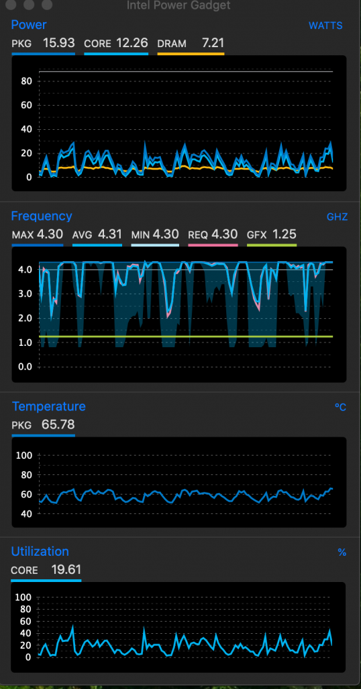

Mac OneDrive CPU 占用率过高 磁盘 分区 容器 APFS
这几天给Mac（黑苹果）换了一块硬盘，不同的格式文件安装的OneDrive，会引起cpu占用过高，未响应的问题。apple磁盘分区，容器，文件系统的管理。
有时在非apfs文件系统下，安装会提示文件随选功能不能打开，重启无效。有时会提示打开文件随选需要apfs格式。只需要将OneDrive的磁盘格式化为APFS格式。

对比之前的磁盘：以前的OneDrive文件夹磁盘为Mac扩展格式，以前安装OneDrive时什么也不提示。安装后，在同步阶段cpu占用率总是100%以上，而且OneDrive总是未响应，但程序还在运行。
昨天就同步了一天还没有完成，今天只能卸载重装了好几次，才提示文件随选需要apfs格式


格式为apfs后的磁盘和运行OneDrive时cpu的状态。
关于磁盘格式：

抹掉整个磁盘，格式为apfs。

使用apfs格式会创建一个容器，共享容器内的存储空间，整个磁盘可以有好几个容器（就是分好几个区）也可以一个容器里面有好几个宗卷（文件夹磁盘）。

添加宗卷类似于创建文件夹，但这个“文件夹”是以独立磁盘的形式存在。放多骚文件，占用多骚的磁盘空间。


分区就是分配磁盘空间，创建容器了。

容器里的磁盘，用多少空间，占用多大。
删除分区：

点击这个磁盘设备->分区，选中要删除的分区，点击‘-’号。

应用->分区->完成
完结，撒花。
不知能不能解决，每次开机OneDrive都要重新更新文件的问题。
嘿！苹果归档内容：
https://tl8517.com/category/system/hackintosh/

吐血，现在不同步情况下OneDrive占用80-100%，隔几秒更新一下。可怕！！！！
是应用问题？设置问题？系统问题？
在来一遍，将数据放一个盘里，如果分出一个名为onedrive的宗卷，重新安装总是提示已经存在onedrive文件夹。


分出名为DATA的宗卷，里面有个onedrive文件夹，在试试
测试目前没有问题。